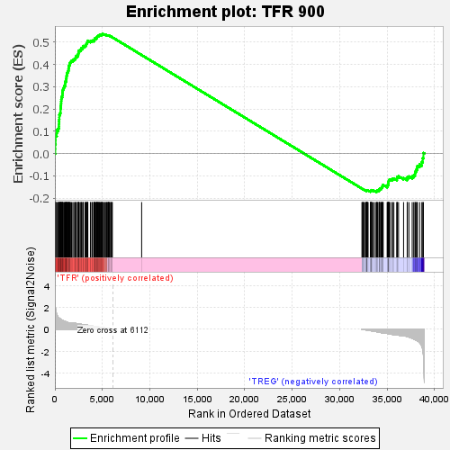
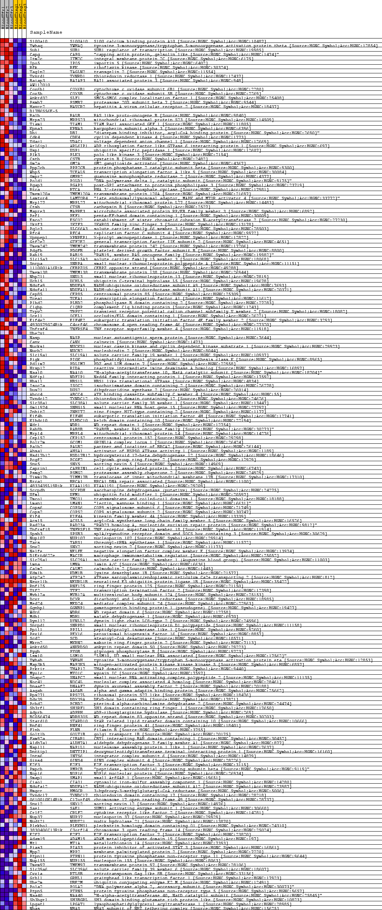
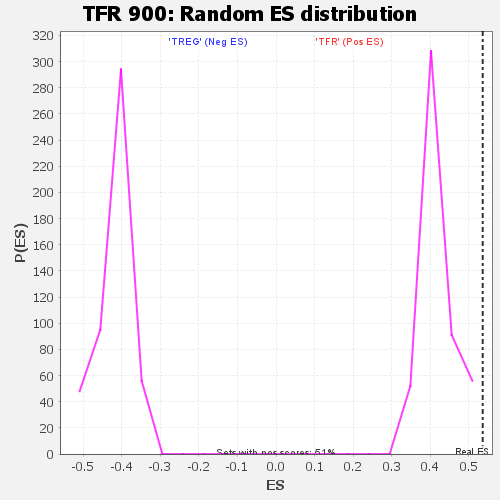

| | | Dataset | BL_TFRvsTREG_TFRvsTREG.tfr_vs_treg_cls.cls#TFR_versus_TREG |
| Phenotype | tfr_vs_treg_cls.cls#TFR_versus_TREG |
| Upregulated in class | TFR |
| GeneSet | TFR 900 |
| Enrichment Score (ES) | 0.5363044 |
| Normalized Enrichment Score (NES) | 1.2483197 |
| Nominal p-value | 0.0 |
| FDR q-value | 0.0862866 |
| FWER p-Value | 0.056 |
Table: GSEA Results Summary

Fig 1: Enrichment plot: TFR 900
Profile of the Running ES Score & Positions of GeneSet Members on the Rank Ordered List
| SYMBOL | TITLE | RANK IN GENE LIST | RANK METRIC SCORE | RUNNING ES | CORE ENRICHMENT | | 1 | S100a10 | na | 39 | 2.053 | 0.0207 | Yes |
| 2 | Ywhaq | na | 41 | 2.034 | 0.0421 | Yes |
| 3 | Sub1 | na | 75 | 1.804 | 0.0603 | Yes |
| 4 | Capg | na | 77 | 1.786 | 0.0791 | Yes |
| 5 | Itm2c | na | 191 | 1.365 | 0.0906 | Yes |
| 6 | Ipo5 | na | 205 | 1.317 | 0.1042 | Yes |
| 7 | Rfk | na | 347 | 1.099 | 0.1122 | Yes |
| 8 | Tagln2 | na | 413 | 1.042 | 0.1215 | Yes |
| 9 | Txnrd1 | na | 423 | 1.036 | 0.1322 | Yes |
| 10 | Baiap3 | na | 431 | 1.030 | 0.1429 | Yes |
| 11 | AW112010 | na | 454 | 1.011 | 0.1530 | Yes |
| 12 | Cox6b1 | na | 465 | 1.005 | 0.1633 | Yes |
| 13 | Cox5b | na | 470 | 1.001 | 0.1738 | Yes |
| 14 | Ankrd32 | na | 545 | 0.957 | 0.1820 | Yes |
| 15 | Psmb7 | na | 595 | 0.909 | 0.1903 | Yes |
| 16 | Havcr2 | na | 596 | 0.909 | 0.1999 | Yes |
| 17 | D17H6S56E-5 | na | 618 | 0.894 | 0.2088 | Yes |
| 18 | Ralb | na | 634 | 0.885 | 0.2178 | Yes |
| 19 | Mrps23 | na | 649 | 0.875 | 0.2267 | Yes |
| 20 | Tiam1 | na | 662 | 0.867 | 0.2355 | Yes |
| 21 | Kpna3 | na | 674 | 0.862 | 0.2443 | Yes |
| 22 | Dbi | na | 687 | 0.855 | 0.2530 | Yes |
| 23 | Cdk4 | na | 770 | 0.817 | 0.2595 | Yes |
| 24 | Vdac1 | na | 786 | 0.811 | 0.2677 | Yes |
| 25 | Arl6ip1 | na | 801 | 0.804 | 0.2758 | Yes |
| 26 | Usp1 | na | 816 | 0.796 | 0.2839 | Yes |
| 27 | Plk3 | na | 871 | 0.776 | 0.2907 | Yes |
| 28 | Cstb | na | 940 | 0.747 | 0.2968 | Yes |
| 29 | Gm2a | na | 989 | 0.730 | 0.3033 | Yes |
| 30 | Ppp2cb | na | 1068 | 0.706 | 0.3087 | Yes |
| 31 | Wbp5 | na | 1072 | 0.704 | 0.3161 | Yes |
| 32 | Gmpr2 | na | 1089 | 0.700 | 0.3230 | Yes |
| 33 | Pold1 | na | 1182 | 0.670 | 0.3277 | Yes |
| 34 | Pgap3 | na | 1184 | 0.670 | 0.3348 | Yes |
| 35 | Rtca | na | 1217 | 0.658 | 0.3409 | Yes |
| 36 | Tmem120a | na | 1228 | 0.654 | 0.3476 | Yes |
| 37 | Lamtor4 | na | 1251 | 0.649 | 0.3538 | Yes |
| 38 | Mrpl27 | na | 1262 | 0.643 | 0.3604 | Yes |
| 39 | Ctsb | na | 1322 | 0.625 | 0.3654 | Yes |
| 40 | Mapre3 | na | 1385 | 0.606 | 0.3702 | Yes |
| 41 | Pef1 | na | 1430 | 0.596 | 0.3754 | Yes |
| 42 | Esco2 | na | 1435 | 0.595 | 0.3816 | Yes |
| 43 | Ikzf3 | na | 1451 | 0.590 | 0.3874 | Yes |
| 44 | Pqlc3 | na | 1457 | 0.589 | 0.3935 | Yes |
| 45 | Rfc4 | na | 1530 | 0.576 | 0.3977 | Yes |
| 46 | Xpnpep1 | na | 1572 | 0.573 | 0.4027 | Yes |
| 47 | Gtf2e2 | na | 1593 | 0.573 | 0.4083 | Yes |
| 48 | Tmem242 | na | 1673 | 0.570 | 0.4122 | Yes |
| 49 | Pdgfb | na | 1753 | 0.567 | 0.4162 | Yes |
| 50 | Rab19 | na | 1884 | 0.561 | 0.4187 | Yes |
| 51 | Slc15a3 | na | 1995 | 0.552 | 0.4217 | Yes |
| 52 | Snrpa | na | 2091 | 0.541 | 0.4250 | Yes |
| 53 | 1110001A16Rik | na | 2173 | 0.532 | 0.4285 | Yes |
| 54 | Tmem138 | na | 2197 | 0.528 | 0.4335 | Yes |
| 55 | Nhp2l1 | na | 2243 | 0.523 | 0.4378 | Yes |
| 56 | Uchl5 | na | 2384 | 0.503 | 0.4395 | Yes |
| 57 | Ndufa9 | na | 2454 | 0.494 | 0.4430 | Yes |
| 58 | Ndufa11 | na | 2463 | 0.492 | 0.4480 | Yes |
| 59 | Cep85 | na | 2482 | 0.489 | 0.4527 | Yes |
| 60 | Tcea1 | na | 2485 | 0.488 | 0.4578 | Yes |
| 61 | Plbd2 | na | 2523 | 0.481 | 0.4619 | Yes |
| 62 | C1qbp | na | 2640 | 0.467 | 0.4638 | Yes |
| 63 | Trpv2 | na | 2744 | 0.450 | 0.4659 | Yes |
| 64 | Ocel1 | na | 2760 | 0.447 | 0.4702 | Yes |
| 65 | Eif4e2 | na | 2805 | 0.440 | 0.4738 | Yes |
| 66 | 4930579G24Rik | na | 2942 | 0.424 | 0.4747 | Yes |
| 67 | Tnfrsf4 | na | 2945 | 0.423 | 0.4791 | Yes |
| 68 | Ube2v1 | na | 2994 | 0.414 | 0.4823 | Yes |
| 69 | Nasp | na | 3172 | 0.403 | 0.4820 | Yes |
| 70 | Canx | na | 3198 | 0.400 | 0.4855 | Yes |
| 71 | Nucks1 | na | 3295 | 0.385 | 0.4871 | Yes |
| 72 | Nucb2 | na | 3313 | 0.381 | 0.4907 | Yes |
| 73 | Slc19a1 | na | 3327 | 0.379 | 0.4944 | Yes |
| 74 | Pigk | na | 3383 | 0.371 | 0.4969 | Yes |
| 75 | Pdlim7 | na | 3423 | 0.366 | 0.4997 | Yes |
| 76 | Hrsp12 | na | 3466 | 0.360 | 0.5024 | Yes |
| 77 | Naa10 | na | 3468 | 0.359 | 0.5062 | Yes |
| 78 | Ndfip1 | na | 3743 | 0.318 | 0.5025 | Yes |
| 79 | Hbs1l | na | 3779 | 0.313 | 0.5049 | Yes |
| 80 | Isoc2a | na | 3921 | 0.291 | 0.5043 | Yes |
| 81 | Dus2l | na | 3951 | 0.287 | 0.5066 | Yes |
| 82 | Abcc4 | na | 4087 | 0.269 | 0.5059 | Yes |
| 83 | Txndc12 | na | 4125 | 0.263 | 0.5078 | Yes |
| 84 | Slc38a1 | na | 4172 | 0.258 | 0.5093 | Yes |
| 85 | Gm11974 | na | 4173 | 0.258 | 0.5120 | Yes |
| 86 | Znhit2 | na | 4179 | 0.258 | 0.5146 | Yes |
| 87 | Eif4h | na | 4216 | 0.253 | 0.5164 | Yes |
| 88 | Klhdc10 | na | 4335 | 0.236 | 0.5158 | Yes |
| 89 | Wdr1 | na | 4346 | 0.235 | 0.5180 | Yes |
| 90 | Rab8b | na | 4407 | 0.227 | 0.5189 | Yes |
| 91 | Mrpl4 | na | 4420 | 0.225 | 0.5210 | Yes |
| 92 | Cep152 | na | 4424 | 0.225 | 0.5233 | Yes |
| 93 | Polr2m | na | 4474 | 0.218 | 0.5243 | Yes |
| 94 | Palb2 | na | 4498 | 0.213 | 0.5259 | Yes |
| 95 | Ahsa1 | na | 4547 | 0.208 | 0.5269 | Yes |
| 96 | Hsd17b12 | na | 4584 | 0.203 | 0.5281 | Yes |
| 97 | Pcgf2 | na | 4635 | 0.196 | 0.5289 | Yes |
| 98 | Snx5 | na | 4657 | 0.192 | 0.5304 | Yes |
| 99 | Caprin1 | na | 4689 | 0.188 | 0.5316 | Yes |
| 100 | Psmg2 | na | 4777 | 0.175 | 0.5312 | Yes |
| 101 | Timm17b | na | 4817 | 0.171 | 0.5320 | Yes |
| 102 | Brca1 | na | 4898 | 0.161 | 0.5316 | Yes |
| 103 | 4833439L19Rik | na | 4918 | 0.159 | 0.5328 | Yes |
| 104 | Sccpdh | na | 4931 | 0.157 | 0.5341 | Yes |
| 105 | Ufm1 | na | 4960 | 0.153 | 0.5350 | Yes |
| 106 | Tmco1 | na | 5028 | 0.143 | 0.5348 | Yes |
| 107 | Lman1 | na | 5029 | 0.143 | 0.5363 | Yes |
| 108 | Cops6 | na | 5140 | 0.130 | 0.5348 | No |
| 109 | Cops2 | na | 5235 | 0.117 | 0.5336 | No |
| 110 | Kif4 | na | 5310 | 0.106 | 0.5329 | No |
| 111 | Acsl5 | na | 5389 | 0.095 | 0.5318 | No |
| 112 | Rad23a | na | 5464 | 0.085 | 0.5308 | No |
| 113 | Tnfrsf18 | na | 5484 | 0.082 | 0.5312 | No |
| 114 | Spsb3 | na | 5570 | 0.069 | 0.5297 | No |
| 115 | Nup107 | na | 5614 | 0.063 | 0.5293 | No |
| 116 | Tars | na | 5639 | 0.061 | 0.5293 | No |
| 117 | Snx2 | na | 5655 | 0.059 | 0.5296 | No |
| 118 | Nelfe | na | 5713 | 0.050 | 0.5286 | No |
| 119 | D1Ertd622e | na | 5723 | 0.049 | 0.5289 | No |
| 120 | Slc29a1 | na | 5866 | 0.031 | 0.5256 | No |
| 121 | Lmna | na | 5886 | 0.027 | 0.5254 | No |
| 122 | Calm2 | na | 5956 | 0.018 | 0.5238 | No |
| 123 | Kdm1b | na | 5994 | 0.013 | 0.5229 | No |
| 124 | Atp2a2 | na | 6053 | 0.006 | 0.5215 | No |
| 125 | Neurl1b | na | 9140 | 0.000 | 0.4418 | No |
| 126 | Rnf125 | na | 32347 | -0.000 | -0.1575 | No |
| 127 | Ttf2 | na | 32417 | -0.009 | -0.1592 | No |
| 128 | Mvb12a | na | 32454 | -0.015 | -0.1599 | No |
| 129 | Dcxr | na | 32455 | -0.015 | -0.1598 | No |
| 130 | Med24 | na | 32546 | -0.028 | -0.1618 | No |
| 131 | Ggnbp1 | na | 32636 | -0.039 | -0.1637 | No |
| 132 | Wdr6 | na | 32792 | -0.060 | -0.1671 | No |
| 133 | Mdh1 | na | 32804 | -0.061 | -0.1667 | No |
| 134 | Dynll2 | na | 32818 | -0.064 | -0.1664 | No |
| 135 | Snrpd1 | na | 32835 | -0.066 | -0.1661 | No |
| 136 | Ppil1 | na | 32872 | -0.071 | -0.1662 | No |
| 137 | Pex16 | na | 32877 | -0.072 | -0.1656 | No |
| 138 | Scd2 | na | 32894 | -0.074 | -0.1652 | No |
| 139 | Mkrn2 | na | 32896 | -0.074 | -0.1645 | No |
| 140 | Ankrd50 | na | 32924 | -0.078 | -0.1643 | No |
| 141 | Pygb | na | 32998 | -0.088 | -0.1653 | No |
| 142 | Lsm10 | na | 33234 | -0.118 | -0.1701 | No |
| 143 | Ywhah | na | 33250 | -0.120 | -0.1692 | No |
| 144 | Map3k5 | na | 33283 | -0.125 | -0.1687 | No |
| 145 | Prkrir | na | 33297 | -0.128 | -0.1677 | No |
| 146 | Myo1c | na | 33303 | -0.129 | -0.1665 | No |
| 147 | Snapc2 | na | 33342 | -0.135 | -0.1661 | No |
| 148 | Noc4l | na | 33369 | -0.139 | -0.1653 | No |
| 149 | Dnaaf2 | na | 33381 | -0.142 | -0.1641 | No |
| 150 | Aagab | na | 33516 | -0.161 | -0.1658 | No |
| 151 | Rps27l | na | 33672 | -0.185 | -0.1679 | No |
| 152 | Ddx39 | na | 33838 | -0.212 | -0.1699 | No |
| 153 | Pcbd2 | na | 33911 | -0.225 | -0.1694 | No |
| 154 | Sh3rf1 | na | 33917 | -0.226 | -0.1671 | No |
| 155 | Adprh | na | 33947 | -0.230 | -0.1654 | No |
| 156 | BC056474 | na | 34003 | -0.238 | -0.1643 | No |
| 157 | Stard10 | na | 34154 | -0.264 | -0.1654 | No |
| 158 | Rnf41 | na | 34158 | -0.264 | -0.1627 | No |
| 159 | Flnb | na | 34171 | -0.266 | -0.1602 | No |
| 160 | Golt1b | na | 34217 | -0.276 | -0.1585 | No |
| 161 | Fam92a | na | 34246 | -0.280 | -0.1562 | No |
| 162 | Aldh7a1 | na | 34385 | -0.311 | -0.1565 | No |
| 163 | Nap1l1 | na | 34392 | -0.312 | -0.1534 | No |
| 164 | Dnttip1 | na | 34446 | -0.322 | -0.1514 | No |
| 165 | Ints6 | na | 34502 | -0.330 | -0.1493 | No |
| 166 | Gins4 | na | 34515 | -0.333 | -0.1461 | No |
| 167 | E2f3 | na | 34526 | -0.335 | -0.1428 | No |
| 168 | Pmpcb | na | 34587 | -0.346 | -0.1407 | No |
| 169 | Nop16 | na | 35013 | -0.377 | -0.1477 | No |
| 170 | Smap1 | na | 35022 | -0.379 | -0.1439 | No |
| 171 | Ciao1 | na | 35091 | -0.392 | -0.1415 | No |
| 172 | Ndufa12 | na | 35092 | -0.392 | -0.1374 | No |
| 173 | Hmgcr | na | 35149 | -0.403 | -0.1346 | No |
| 174 | Txndc17 | na | 35152 | -0.404 | -0.1304 | No |
| 175 | 0610010K14Rik | na | 35157 | -0.406 | -0.1262 | No |
| 176 | Snx12 | na | 35170 | -0.410 | -0.1222 | No |
| 177 | Sae1 | na | 35205 | -0.416 | -0.1186 | No |
| 178 | Crlf2 | na | 35295 | -0.435 | -0.1164 | No |
| 179 | Nup37 | na | 35496 | -0.452 | -0.1167 | No |
| 180 | Nudt21 | na | 35572 | -0.470 | -0.1137 | No |
| 181 | Plekho1 | na | 35712 | -0.490 | -0.1121 | No |
| 182 | 3830406C13Rik | na | 36028 | -0.530 | -0.1147 | No |
| 183 | E2f7 | na | 36037 | -0.531 | -0.1093 | No |
| 184 | Adam19 | na | 36072 | -0.533 | -0.1045 | No |
| 185 | Mt1 | na | 36205 | -0.544 | -0.1022 | No |
| 186 | Pias3 | na | 36735 | -0.573 | -0.1098 | No |
| 187 | Mpp2 | na | 37116 | -0.661 | -0.1126 | No |
| 188 | Ptpn11 | na | 37134 | -0.665 | -0.1061 | No |
| 189 | Nup155 | na | 37298 | -0.712 | -0.1028 | No |
| 190 | Tmem97 | na | 37643 | -0.828 | -0.1029 | No |
| 191 | Slc39a6 | na | 37801 | -0.883 | -0.0976 | No |
| 192 | Cxx1a | na | 37939 | -0.935 | -0.0913 | No |
| 193 | Grhl1 | na | 37956 | -0.942 | -0.0818 | No |
| 194 | Ube2m | na | 38049 | -0.983 | -0.0738 | No |
| 195 | Pola2 | na | 38141 | -1.037 | -0.0652 | No |
| 196 | Ptpn5 | na | 38191 | -1.060 | -0.0552 | No |
| 197 | Naa40 | na | 38426 | -1.209 | -0.0485 | No |
| 198 | Sh3bgrl | na | 38660 | -1.563 | -0.0380 | No |
| 199 | Lpgat1 | na | 38757 | -1.868 | -0.0208 | No |
| 200 | Nbas | na | 38826 | -2.367 | 0.0025 | No |
Table: GSEA details [plain text format]

Fig 2: TFR 900
Blue-Pink O' Gram in the Space of the Analyzed GeneSet

Fig 3: TFR 900: Random ES distribution
Gene set null distribution of ES for TFR 900